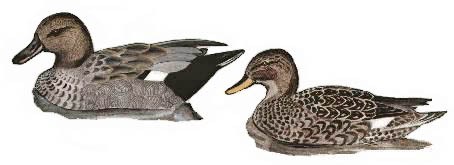

Gadwall
Originally an annual winter visitor, often as paired birds, mostly staying just one day. From August 2015 virtually resident.

No records between 1924 & 1961.
15/11/62 - Single male. (DEP)
02/01/64 - Single male. (DEP)
29/04/65 - Single bird. (DEP)
17/03/66 - Single male. Seen again on 24/03
06/03/69 - Pair
28/12/70 - 2 birds
09/12/71 - Single male
19/09/73 - Single bird
22/03/74 - Single bird
1984 - 1 or 2 birds between February & May
22/02/85 - 4 birds
31/12/85 - 4 birds
01/12/86 - 4 birds
22/04/91 - 2 birds
13/12/91 - 12 birds. Record count to date
10/01/92 - 2 males
07/01/93 - 3 birds
25/11/93 - 3 males & 1 female
29/01/96 - 9 birds
??/02/96 - 2 birds
28/12/96 - 8 birds
28/01/97 - Single bird
04/12/98 - 4 birds
??/12/98 - 2 birds. (AJB)
21/02/99 - 2 males & 1 female
??/11/99 - 2 birds. (AJB)
08/04/00 - 3 birds
16/10/00 - 1 male
20/01/01 - 2 birds
01/12/01 - Pair
11/12/01 - Pair
01/01/02 - 1 male
21/03/02 - 3 birds
19/09/02 - 1 male
21/11/02 - 3 birds
18/10/03 - Pair
24/10/03 - 1 male
06/01/04 - Pair
14/02/04 - Pair
07/03/04 - Pair
18/12/05 - Pair
24/10/06 - Pair
10/02/07 - Pair
28/11/10 - 6 birds
03/12/10 - 4 birds stayed 2 days
16/02/11 - 3 birds
06/11/11 - 1 bird
24/12/11 - 2 males
28/01/12 - 1 pair
04/11/12 - 1 male
12/12/12 - 1 pair
17/01/13 - 3 birds
07/06/13 - 1 male
16/10/13 - 1 male
07/12/14 - 1 pair
19/12/14 - 1 very healthy female released by RSPCA (raised at West Hatch from apparently abandoned chick found in Dorset) not seen next day.
2015 - An exceptional year with Gadwall reported on 55 dates. A single bird on 13/03 was the only record in the first 7 months. But then a male arrived on 27/08 and remained possibly until the end of the year. On 25/10 there were 5 birds present (probably 2 pairs joined the lone male) and these stayed for at least 2 weeks. From 09/11 the records were regular, but not quite daily with up to 5 seen for the remainder of November and up to 4 seen in December. Prior to this even a 2 day stay was unusual with poor feeding presumed to be the reason.
2016 - An even better year with Gadwall reported on 78 dates including through the summer, with max 8 on 3 dates and 6 reported on 13 dates. They have gone from being one day visitors to effectively resident.
2017 - Reported on 95 dates with max of 7 on 3 dates in January. Also 6 on 2 dates in January and one date early February.
2018 - Reported on 60 dates with max of 8 on 13/02
2019 - Reported on 58 dates (none April to August inclusive) with max of 7 on 6 dates and 5 on 12 dates through the period
2020 - Reported on only 15 dates through the year mostly one pair with 3 present on 09/08
2021 - Reported on 19 mostly winter dates with max of 8 on 22/11 and 8 on 26/12. The non winter records were 5 on 26/08 and 2 on 29/04
2022 - Reported on 62 dates (none April to August inclusive). Max of 5 pairs on 03/03 and again 12/03. Otherwise 1-6 birds seen
2023 - Reported on 40 dates. 1-6 birds seen, none from February to July inclusive
2024 - Reported on 29 dates. 1-3 birds apart from max of 9 on 31/08, 7 on 02/09 and 7 on 29/12
2025 - Reported on 45 dates. Mating noted on 24/02 and records of 1-3 birds then through the following months into September, possibly involving the same 2 males and 1 female. None in October. 6 birds on 16/11 and Maximum of 8 on 03/12 and 7 on 20/01